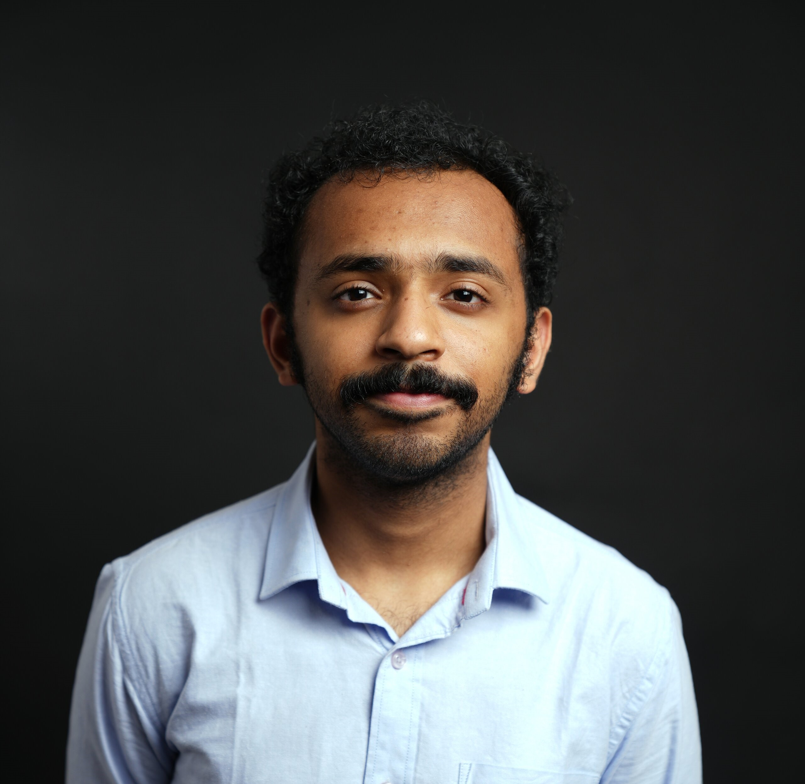

Shone Cherian

Objective
Highly motivated Networking Engineering student with a strong foundation in Cisco technologies, TCP/IP, and troubleshooting, seeking an entry-level position. Eager to apply academic knowledge and hands-on lab experience in a dynamic environment to enhance network performance and security. Committed to professional growth, earning certifications, and contributing to organizational success.
Qualification
- AWS Certified Cloud Practitioner
- Information Technology Cybersecurity Specialist Certification - Certiport
- Information Technology Network Specialist Certification - Certiport
- CS50AI Introduction to Artificial Intelligence-Harvard University
Job Experience
| position |
Duration |
Software Development Intern
Florida International University – AMPATH | Project: INT-Collector
- Standardized data integration protocols by merging INT-Collector with MongoDB, ensuring data consistency across 10+ applications and supporting robust data governance practices.
- Developed a visualization pipeline by exporting collected data to Grafana for time-series analysis.
- Developed a reusable visualization package, reducing configuration time for end users by 40%.
|
June 2025-Present |
Career Ambassador - Marketing and Employer Relations
Georgia Gwinnett College, Department of Career Service, Lawrenceville, GA
- Built and published Chrome extensions to simplify the grading of resumes and interviews.
- Organized and promoted career readiness events, improving student engagement and attendance by 15%.
|
February 2024- Present
|
Projects
Undergraduate Research on A-ATV
Georgia Gwinnett College, Department of Science and Technology, Lawrenceville, GA
- Implemented autonomous navigation with the vehicle in a previously unexplored environment
- Award: Most Outstanding Poster Presentation at Georgia Academy of Science,
2025, Dean’s Award at the STARS symposium, 2nd place for poster at NASA
MINDS 2025
Morse Message App
- Developed a Flask server to send and receive Morse code messages via a web interface.
- Designed a custom Morse code keyboard using Raspberry Pi and physical buttons representing dots and dashes, making the app portable and hardware interactive.
Tools/Technologies
- Languages: Python, C++, Java, JavaScript, SQL (MySQL), NoSQL (MongoDB)
- Tools & Platforms: Docker, Grafana, Git/GitHub, ROS2, Raspberry Pi, MediaPipe
- Networking & Security: VPN, Cloud Networking (AWS), Container Networking
- Other: Data Visualization, REST API Development, Automation, Linux Administration
Social Media
You can connect and follow me on LinkedIn
References
- Dr.Sairam Tangirala
Professor
Georgia Gwinnett College
1000 University Center Ln,
Lawrenceville, GA 30043
770-856-9185
stangira@ggc.edu
Note: This professor supervised my research project.
-
Dr.Sebastien Siva
Professor
Georgia Gwinnett College
1000 University Center Ln,
Lawrenceville, GA 30043
770-313-0338
ssiva@ggc.edu
Note: This professor taught me programming fundamentals.